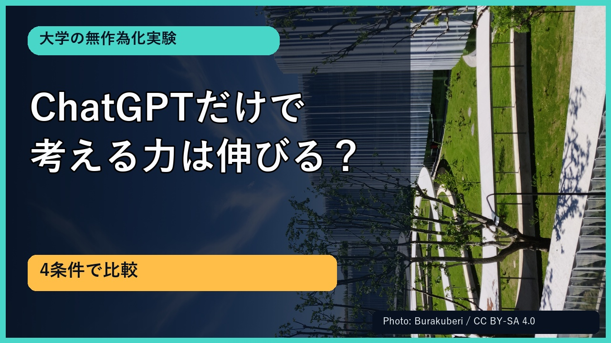
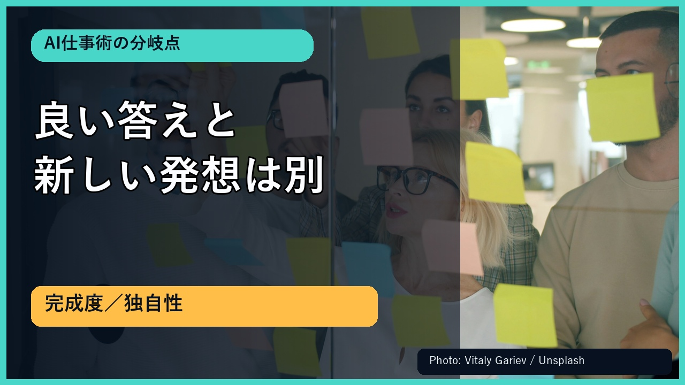

AI進化レーダー｜2026年8月28日 金曜本編
ChatGPTだけでは独自性は伸びない？1,053人の実験から学ぶAI仕事術
Revision 4では生成写真を全て外し、権利確認済み実写13点と根拠図解を融合しました。下端360pxを字幕専用領域に固定しています。
最終動画（4分17秒）
確認操作：動画を最初から最後まで1回再生し、問題なければ「最終動画OK」と返信してください。
字幕62枚は実音声の時間へ1対1で同期。機械検査PASS。外部予約・公開はまだ実行していません。
サムネイル3案


選択案：A。3案すべて実写写真と画像内コピーを組み合わせ、160px相当でも可読性を確認済みです。
映像の見え方

実写写真、公式研究の要点、日本語比較図、二段階フロー、注意点を明示。全22カット・62字幕カードでスライド文字と字幕の重なり0pxを確認済みです。
公開設定
予定日時2026/8/28 19:00 JST
投稿先YouTube
AI進化レーダー
AI進化レーダー
価格無料
費用Aivis推定69.83円
承認上限70円
承認上限70円
再生リスト：AI進化レーダー｜AI重要ニュース
一次情報：OpenAI公式発表
Board：https://reiki-ai-apps.github.io/AI-/board/#approvals
外部請求の確定額は取得不能。新規画像課金・BGM費用なし。
説明欄
OpenAIが2026年8月27日に公表した、Bocconi Universityの初年次学生1,053人を対象とする無作為化実験を1件深掘りします。ChatGPTは提出物の完成度を、因果推論訓練はアイデアの幅を伸ばしたという結果から、学校や仕事でAIと考える力をどう組み合わせるか整理します。
AI進化レーダー：仕事に影響するAI更新を一次情報つきで確認
https://reiki-ai-apps.github.io/AI-/?utm_source=youtube&utm_medium=description&utm_campaign=critical_thinking_20260828
情報元（OpenAI・2026年8月27日）
https://openai.com/index/what-students-gain-from-chatgpt-critical-thinking-training/
0:00 はじめに
0:17 研究の概要
0:49 ChatGPTは完成度へ
1:07 高得点と独自性は別
1:24 思考訓練は独自性へ
1:41 両方を組み合わせる
1:57 仕事で使う二段階
2:32 誤認を防ぐ
2:50 研究の注意点
3:08 評価を二軸にする
3:28 今日使える四つの質問
3:46 今日の結論
4:05 AI進化レーダー
この動画ではAI音声を使用しています。映像は権利確認済みの実写写真、公式一次情報、出典明記の日本語図解で構成し、生成写真は使用していません。
研究対象は特定大学の初年次学生と特定のマーケティング課題であり、すべての年代・科目・職種に同じ効果を保証するものではありません。
写真クレジット：Vitaly Gariev、Olena Kholina、Ashutosh Gupta、Julio Lopez、Kris Tian、Walls.io、Hasnain Ayaz（Unsplash License）／Burakuberi（CC BY-SA 4.0）
各写真の個別URLとライセンスは制作台帳に保存しています。
同一Revisionの証跡
Revision: kizashi-20260828-youtube-longform-r4
video SHA-256: 0d98e4b1dbfd69fac3950788c0c8e5ad72b35c88803529432530904fd1b5fcce
動画とサムネイルは別承認対象です。現Revisionの両方が承認されるまで外部予約しません。